Next: 4.4 Compression failure: Pore Up: 4. Rock Yield and Previous: 4.2 Tensile failure Contents
The shear strength of rocks depends on the cohesive strength of the rock (to be explained later) and the internal frictional strength of the rock.
The frictional strength depends on friction forces, where the force needed to displace an object resting on a surface depends on the friction coefficient  and applied normal force , such that
(Figure 4.8).
Hence, if the normal force 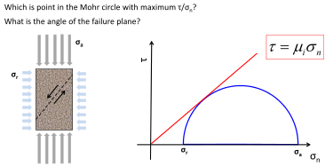, then .
The frictional force increases linearly with the value of the normal force .
and applied normal force , such that
(Figure 4.8).
Hence, if the normal force 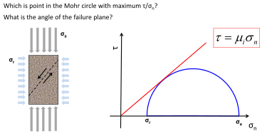, then .
The frictional force increases linearly with the value of the normal force .
Similarly, uncemented sediments can resist shear stresses with the application of an effective “confining” compressive stress (remember the example of the vacuum-sealed coffee). The maximum shear stress in uncemented sands is proportional to the normal effective stress through an “internal” friction coefficient 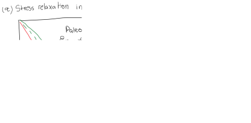 (red line in Figure 4.9). The sand is at shear failure when the shear line 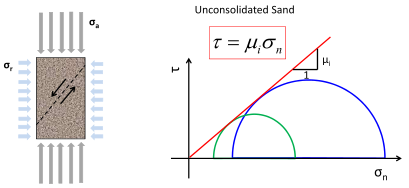 intercects the state of stress represented by the Mohr circle (Check this online Mohr's circle drawer).
The Mohr circle represents all possible state of stresses depending on the plane at which you measure and .
Notice that from all those possible state of stresses, there is just one state of stress that intersects the line
.
That plane is the plane at which a shear fracture would form.
Similarly to Figure 4.8, if
then  , so the sand has no strength whatsoever without an effective compressive stress.
The friction coefficient is often expressed as a friction angle , where
.
Typical values of vary from 0.4 to 1.0.
For example, if 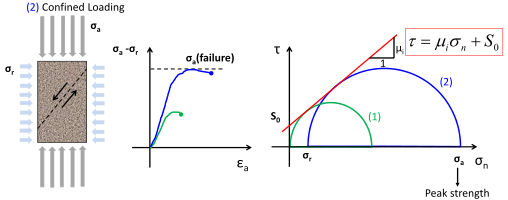, then
.
, so the sand has no strength whatsoever without an effective compressive stress.
The friction coefficient is often expressed as a friction angle , where
.
Typical values of vary from 0.4 to 1.0.
For example, if 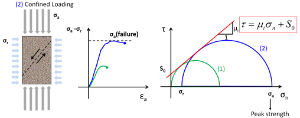, then
.
Cemented rocks can bear shear stresses with zero effective lateral stress
( for radial effective stress as in cylindrical samples).
Figure 4.10 shows an unconfined cylindrical rock loaded (on the top face) to failure with a compression effective stress .
We call  (Unconfined Compression Strength) to the maximum compression stress (applied in axial direction) the rock can hold under unconfined conditions.
Axisymmetric tests require rocks samples in which the length should be about twice the diameter to minimize shear end-effects (as in short samples) and buckling instabilities (as in long samples).
(Unconfined Compression Strength) to the maximum compression stress (applied in axial direction) the rock can hold under unconfined conditions.
Axisymmetric tests require rocks samples in which the length should be about twice the diameter to minimize shear end-effects (as in short samples) and buckling instabilities (as in long samples).
![\includegraphics[scale=0.60]{.././Figures/split/5A-12.pdf}](img471.svg) |
Let us now apply an effective compressive “confining” stress
 (Figure 4.11).
The measured peak stress is higher than the peak stress without confining stress.
The increment in peak stress will be a function of the internal frictional strength of the rock.
Hence, the maximum shear stress will be a function of both the rock cohesive strength and the applied normal effective compressive stress through the Coulomb failure criterion expressed in the following equation:
(Figure 4.11).
The measured peak stress is higher than the peak stress without confining stress.
The increment in peak stress will be a function of the internal frictional strength of the rock.
Hence, the maximum shear stress will be a function of both the rock cohesive strength and the applied normal effective compressive stress through the Coulomb failure criterion expressed in the following equation:
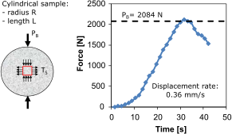 |
With a linear shear failure criterion, a fracture will ideally form at an angle from the plane where the maximum principal stress is applied. Such plane will also be co-linear with the intermediate principal stress. For a typical value of , .
PROBLEM 4.2:
In the following uncemented sediment sample and corresponding figure:
a) Which is the point in the Mohr circle with maximum
 ?
?
b) What is the angle of the failure plane?
c) What is the ratio
at failure?
SOLUTION
a) The point in the Mohr circle with maximum ratio
is the one that touches the yield line, for which

b) Let us use the figure above to solve the problem.
The top side of the sample is subjected to stress
in the - plane.
The lateral side of the sample is subjected to stress
in the - plane.
The state of stress
 at failure can be located going
counterclockwise from
to
.
The plane of shear failure corresponds to this point and it is at
at failure can be located going
counterclockwise from
to
.
The plane of shear failure corresponds to this point and it is at
 from the top side towards the lateral side.
Notice that going from
to
takes 180
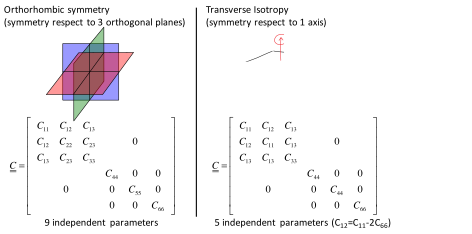 in the Mohr circle.
from the top side towards the lateral side.
Notice that going from
to
takes 180
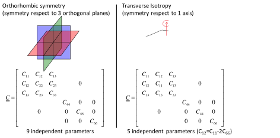 in the Mohr circle.
c) Let us use (center of the circle) and  (radius of the circle) to express
:
(radius of the circle) to express
:

Sometimes, it is easier to think (and compute) shear failure parameters based on principal stresses rather than on normal and shear stress (Figure 4.12). Coulomb's failure criterion (Eq. 4.2) can be written as
| (4.3) |
where  is the effective maximum principal stress at failure, is the effective minimum principal stress and
is the effective maximum principal stress at failure, is the effective minimum principal stress and  is the friction parameter function of the friction angle (warning: this is not the same from the 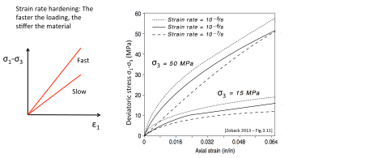 or
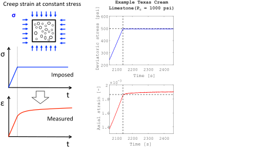 space).
It can be shown that,
is the friction parameter function of the friction angle (warning: this is not the same from the 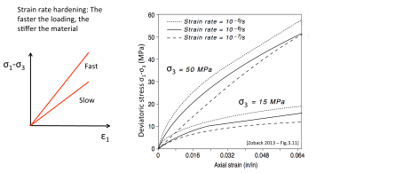 or
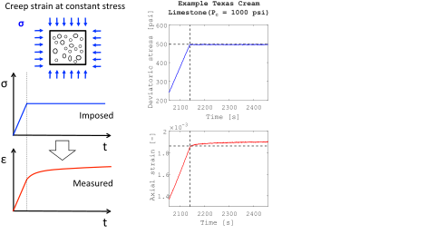 space).
It can be shown that,
| 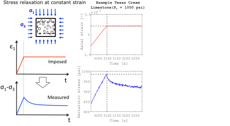 | (4.4) |
For a typical
, .
can also be expressed in terms of cohesive strength as
![\includegraphics[scale=0.65]{.././Figures/split/5A-16.pdf}](img499.svg) |
Figure 4.13 summarizes shear strength properties for various cemented rocks.
The shear strength of rocks depends on effective stresses, not on total stresses.
In the field and the laboratory, however, we usually measure total stresses
instead of effective stresses
.
The shear strength of rocks is measured in a triaxial frame (Fig. 4.14-a).
A cylindrical triaxial frame can apply independently a confining pressure (that converts into stress) , a deviatoric stress , and a pore pressure  .
The confining stress is applied by means of a deformable sleeve around the rock by changing the confining fluid pressure with a fluid pump.
The confining fluid is usually hydraulic oil or water.
The sleeve makes it possible to apply an effective confining stress and prevents confining fluid to enter into the rock pores and mix with the pore fluid.
The confining pressure is maintained constant in a typical deviatoric triaxial test .
.
The confining stress is applied by means of a deformable sleeve around the rock by changing the confining fluid pressure with a fluid pump.
The confining fluid is usually hydraulic oil or water.
The sleeve makes it possible to apply an effective confining stress and prevents confining fluid to enter into the rock pores and mix with the pore fluid.
The confining pressure is maintained constant in a typical deviatoric triaxial test .
The pore fluid pressure is applied with another fluid pump.
A fluid conduit connects the pump with the rock pore space.
Some triaxial frames have two pore fluid outlets to measure permeability during loading. Notice that  , otherwise the sleeve would inflate like a balloon inside the pressure vessel.
The pore pressure is maintained constant in a typical deviatoric triaxial test .
, otherwise the sleeve would inflate like a balloon inside the pressure vessel.
The pore pressure is maintained constant in a typical deviatoric triaxial test .
The deviatoric stress is applied through axial loading with a piston that compresses the rock in axial direction. The deviatoric stress is defined as
 , where
, where  is the total maximum stress applied with the frame and
is the total maximum stress applied with the frame and  is the minimum total stress (equal to the confining pressure
is the minimum total stress (equal to the confining pressure  ).
Notice that in a cylindrical triaxial frame
).
Notice that in a cylindrical triaxial frame  and
and
 . The deviatoric stress is increased with a constant displacement (strain) rate
. The deviatoric stress is increased with a constant displacement (strain) rate
 in a typical deviatoric triaxial test.
in a typical deviatoric triaxial test.
The data shown in Fig. 4.14-b summarizes the results of 14 independent triaxial tests: is the confining pressure for each experiment, is the maximum stress measured at failure, and  is the preset pore pressure.
The data shows that the maximum principal stress (measured at failure) tends to increase as increases and tends to decrease as increases.
When the data is corrected to effective stresses (Fig. 4.14-c), it becomes clear that there is just one relationship between
is the preset pore pressure.
The data shows that the maximum principal stress (measured at failure) tends to increase as increases and tends to decrease as increases.
When the data is corrected to effective stresses (Fig. 4.14-c), it becomes clear that there is just one relationship between
 and
and
 .
.
The equation that links these two quantities is Eq. 4.12.
It is usually easier to calculate and from fitting a straight line to (failure)- data, and then calculate cohesive strength from Eq. 4.5, friction angle as
PROBLEM 4.3: Fit a line (manually) to the data shown in Fig. Fig. 4.14-c for the Darley Dale sandstone and calculate , , , and .
SOLUTION
The red line in Fig. 4.14-c was manually drawn ignoring the point with the highest confining stress.
Hence, this line is accurate only when
 MPa.
MPa.
The red line hits the y-axis at
 MPa, hence,
MPa, hence,
 MPa
MPa
The parameter is the slope of the red line. Taking the entire line length:

Finally, using Eqs. 4.5 and 4.6:


In the process of triaxial loading, rocks begin by decreasing volume (compression loading) but may show positive changes of volumetric strain
 approaching failure.
That is, the rock may start shrinking but it may dilate close to failure giving
approaching failure.
That is, the rock may start shrinking but it may dilate close to failure giving
 (dilation is negative).
At this point the rock is not elastic anymore and develops damage inside.
Considerable damage often starts at 50% to 70% of the peak stress.
(dilation is negative).
At this point the rock is not elastic anymore and develops damage inside.
Considerable damage often starts at 50% to 70% of the peak stress.
![\includegraphics[scale=0.65]{.././Figures/split/Triaxial-Darley.pdf}](img527.svg) |
![\includegraphics[scale=0.45]{.././Figures/split/5A-10.pdf}](img457.svg)